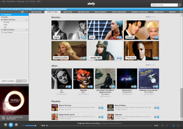

Simfy
Archivierte Anleitung
Dieser Artikel wurde archiviert, da er - oder Teile daraus - nur noch unter einer älteren Ubuntu-Version nutzbar ist. Diese Anleitung wird vom Wiki-Team weder auf Richtigkeit überprüft noch anderweitig gepflegt. Zusätzlich wurde der Artikel für weitere Änderungen gesperrt.
Anmerkung: Ende März 2012 wurde die Linux-Unterstützung  von Simfy eingestellt. Das hier beschriebene Client-Programm kann nicht mehr verwendet werden, auch nicht mit älteren Ubuntu-Versionen. Allerdings kann man Simfy noch über dessen Webseite nutzen.
von Simfy eingestellt. Das hier beschriebene Client-Programm kann nicht mehr verwendet werden, auch nicht mit älteren Ubuntu-Versionen. Allerdings kann man Simfy noch über dessen Webseite nutzen.
Zum Verständnis dieses Artikels sind folgende Seiten hilfreich:
Simfy ist ein kommerzielles deutsches Webportal, das Musik in erster Linie als Stream (und nicht als Download) anbietet. Es stehen über 16 Millionen Lieder zur Verfügung. Das Angebot ist vollkommen legal, da Simfy die Rechte von den Plattenfirmen einkauft. Finanziert wird dies über Premium-Nutzer und Werbung, die in der Gratis-Version zwischen den Liedern eingespielt wird. In den Premium-Tarifen gibt es auch Unterstützung für iOS und Android.
Ab März 2012 ist das konkurrierende, ebenfalls kommerzielle Angebot von Spotify auch in Deutschland verfügbar. Allerdings setzt Spotify zwingend ein Facebook-Konto voraus und ein Linux-Client befindet sich noch in Entwicklung .
Voraussetzungen¶
Um den Simfy-Client zu installieren zu können, wird die Laufzeitumgebung Adobe Air vorausgesetzt. Wie man diese installiert, ist dem entsprechenden Artikel zu entnehmen.
Installation¶
Der Client ist nicht in den offiziellen Paketquellen enthalten. Zunächst muss die Installationsdatei für Simfy Desktop  heruntergeladen werden.
heruntergeladen werden.
Hinweis!
Fremdsoftware kann das System gefährden.
Diese wird als .zip-Datei ausgeliefert. Nach dem Entpacken [1] steht eine .deb-Datei zur Verfügung, die man z.B. per Doppelklick mit dem Software-Center installieren [2] kann.
64-Bit¶
bis Ubuntu 11.04¶
Bis Ubuntu 11.04 kann man Simfy installieren, indem man in das Download-Verzeichnis wechselt und dann folgenden Befehl in ein Terminal [3] [4] eingibt:
sudo dpkg --force-architecture --force-depends -i simfy_1.5.2.deb
ab Ubuntu 11.10¶
Zuerst muss die .deb-Datei entpackt [1] werden. Danach wechselt man im entpackten Ordner in das Verzeichnis /Debian und sucht die Textdatei control. Diese müsste so aussehen:
1 2 3 4 5 6 7 8 9 10 | Package: simfy Version: 1.5.2 Section: Applications Priority: extra Architecture: i386 Source: simfy Maintainer: simfy GmbH Description: <> Pre-Depends: adobeair (>= 1:2.6.0.0) Installed-Size: 2796 |
In der Zeile architecture muss der Wert von i386 in amd64 geändert werden. Außerdem muss der Eintrag bei pre-depends entfernt werden. Nun kann man die Datei wieder speichern und das Paket mit folgendem Befehl neu packen:
dpkg -b simfy_1.6.2
Die daraus resultierende .deb-Datei kann man nun problemlos installieren.

Verwendung¶
Hat man das Programm gestartet, muss man sich zunächst registrieren. Es ist möglich, Simfy mit einem kostenlosen, dem Premium- oder dem Premium-Plus-Konto zu nutzen. Funktionen und aktuelle Preise können auf der Simfy-Seite unter Tarife eingesehen werden.
Danach kann man aus vorgegebenen Empfehlungen von Simfy Künstler oder Alben auswählen, die man hören möchte oder rechts oben die Suchfunktion benutzen. Links unten wird angezeigt, wie viel Musik man gehört hat (im kostenlosen Tarif). Außerdem kann man sich Wiedergabelisten (Playlists) anlegen.
Hinweis:
Simfy ist relativ kooperativ und freut sich über Feedback der Benutzer. Wer bei Simfy angemeldet ist, kann seine Stimmen (max. 3) dafür abgeben, dass die gesamte Entwicklung auf Java portiert wird, womit langfristig Linux (und Ubuntu) mit im Rennen bleibt und das 64-bit-Problem wegfällt. Hierzu folgende Diskussion aufrufen (nur nach Anmeldung im dortigen Forum möglich) und links auf "Abstimmen" gehen (Stand: Februar 2012).
Links¶
Simfy - Wikipedia
Legales Musik-Streaming mit Simfy aus Berlin unter Ubuntu Linux
Blogbeitrag 08/2011
- Erstellt mit Inyoka
-
 2004 – 2017 ubuntuusers.de • Einige Rechte vorbehalten
2004 – 2017 ubuntuusers.de • Einige Rechte vorbehalten
Lizenz • Kontakt • Datenschutz • Impressum • Serverstatus -
Serverhousing gespendet von